Consultas médicas
Evaluación otorrinolaringológica de adultos y niños. Fonasa, Isapre o particular.
Ver valores →Centro Médico de Otorrinolaringología · Providencia
Oído, nariz y garganta para adultos y niños. Diagnóstico con videonasofibroscopia en la misma consulta y cirugía en clínicas de Providencia. Atendemos Fonasa e Isapres.
Respondemos de lunes a viernes, 09:00–14:00 y 15:00–19:00.
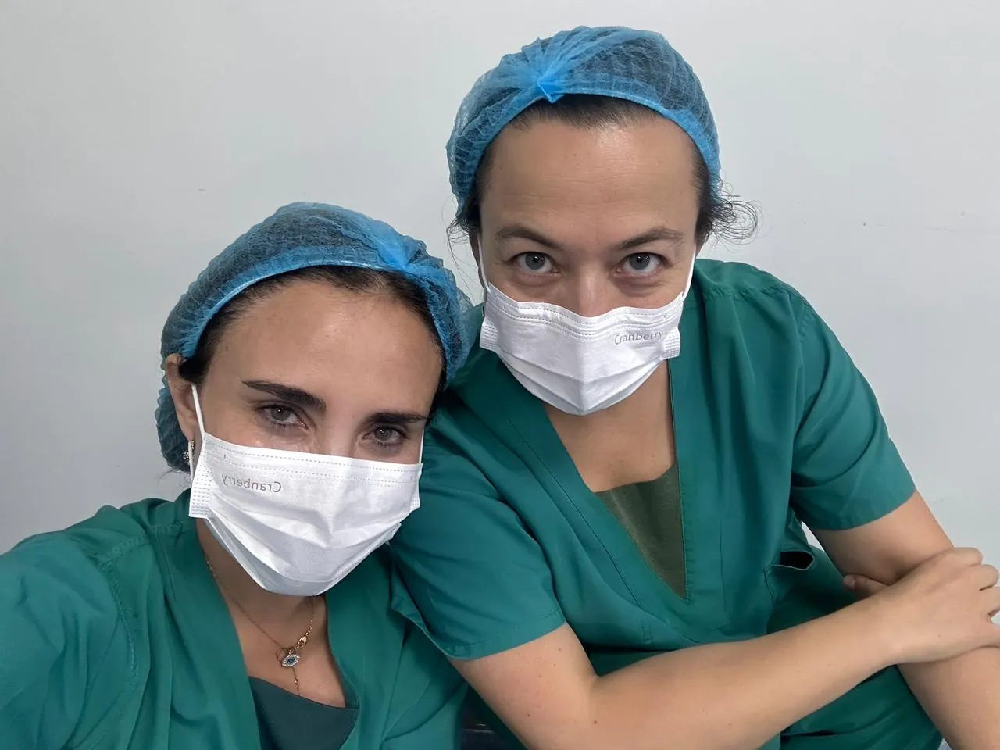
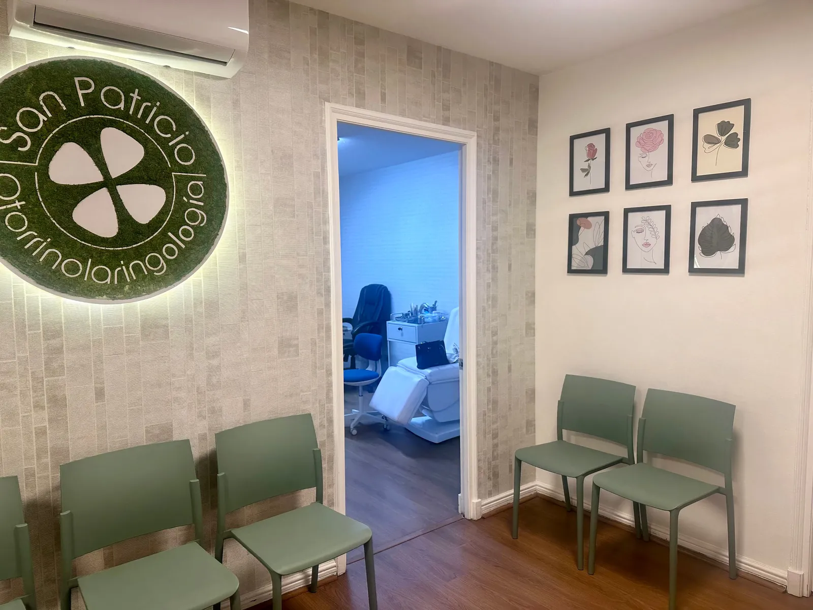
Operamos en
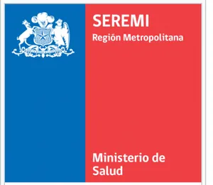
Patologías que tratamos
Las especialistas en otorrinolaringología (oído, nariz y garganta) de San Patricio tratan las afecciones que figuran a continuación. Elige una zona o escribe tu síntoma.
Congestión que no cede, sinusitis repetidas, ronquido o pérdida del olfato. Evaluamos la causa con endoscopía en la misma consulta.
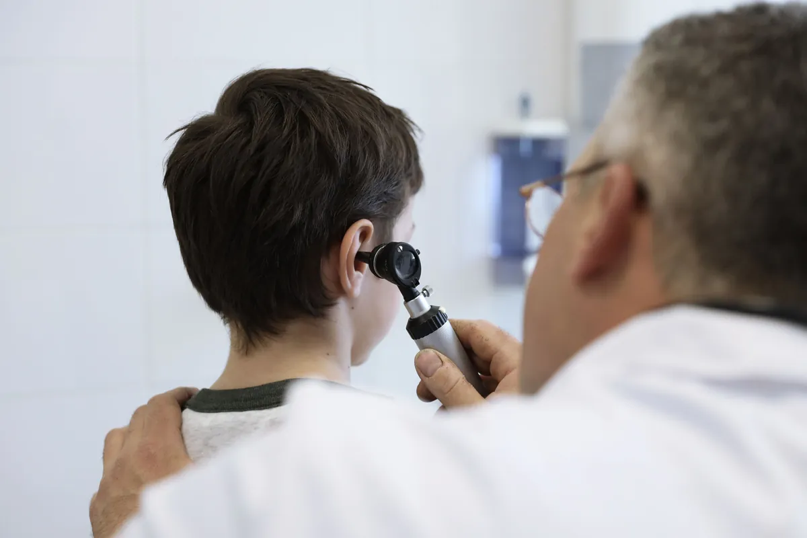
Zumbidos, mareos, oído tapado o pérdida de audición. Incluye procedimientos para tinnitus e hipoacusia y punciones intratimpánicas con corticoides.
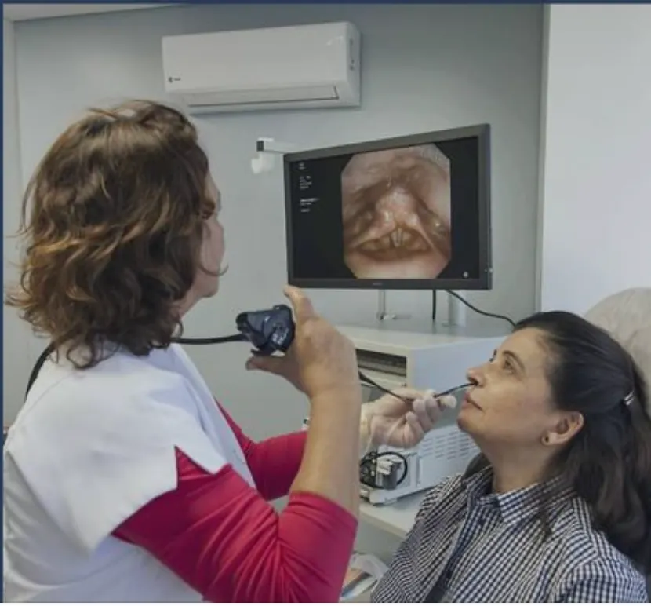
Disfonía, dificultad para tragar o molestias persistentes en la boca. Estudiamos las cuerdas vocales y la deglución con videonasofibroscopio.
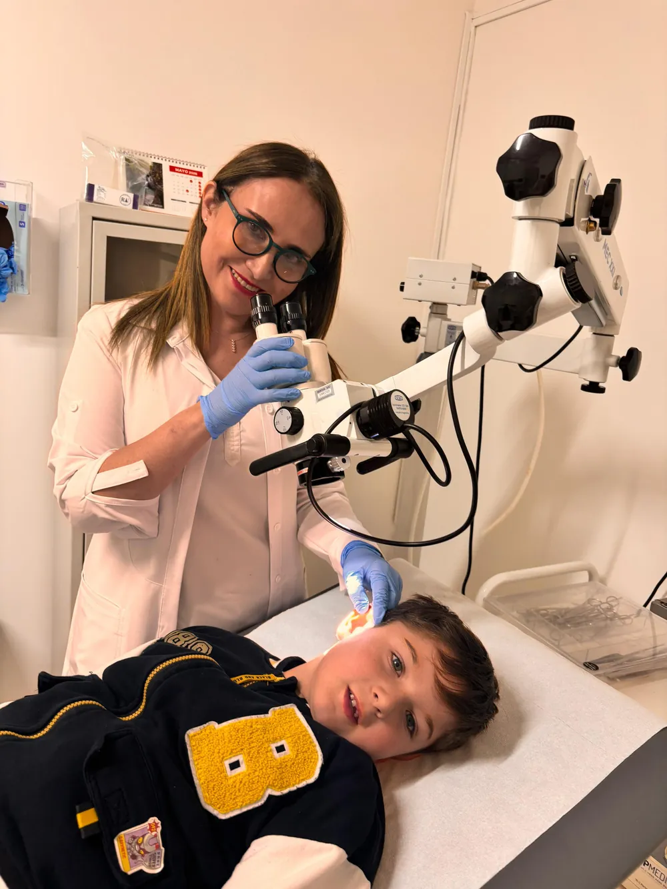
Niños que roncan, respiran por la boca o repiten otitis. Resolvemos amígdalas, adenoides y colleras en clínicas de Providencia.
No lo encontramos en la lista, pero probablemente lo atendemos. Pregúntanos por WhatsApp →
* Consulte directamente por otras patologías.
Consultar mi casoNuestros servicios
Evaluación otorrinolaringológica de adultos y niños. Fonasa, Isapre o particular.
Ver valores →Punciones intratimpánicas con corticoides y procedimientos para tinnitus e hipoacusia. Limpieza de oídos, cauterizaciones y taponamientos nasales sin costo extra.
Qué incluye la consulta →Visión completa de nariz, faringe y laringe con informe de fotos y video, el mismo día.
Cómo es el examen →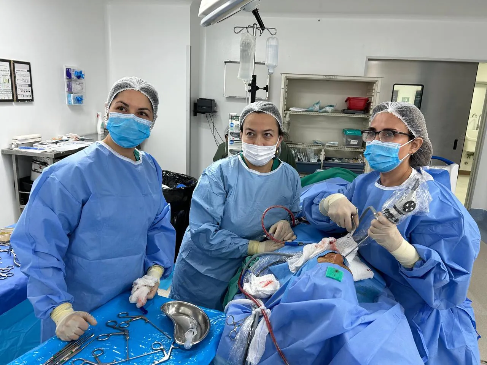
Nariz, oído, garganta y vía aérea infantil en Indisa Providencia, RedSalud Providencia y Juan Pablo II.
Ver cirugías →Procedimientos diagnósticos
Consiste en introducir un endoscopio flexible fino a través de las fosas nasales con el objetivo de obtener una visión completa de la vía aérea‑digestiva superior, pudiendo documentar los hallazgos a través de fotografías o videos.
Es de gran utilidad en la especialidad ya que permite reconocer espacios profundos de la anatomía que no pueden distinguirse con ningún otro método, permitiendo diagnosticar el estado de la mucosa (inflamaciones, infecciones, sangrados, tumores, etc.). Es útil también para el diagnóstico de alteraciones de la voz (disfonías), presencia de cuerpos extraños o sospecha de estos, y se usa en las complicaciones de la especialidad como complemento para definir los espacios de la vía aérea comprometidos por una infección o un tumor.
También es una valiosa herramienta para la evaluación de los trastornos de la deglución.
Cirugías
Operamos en tres clínicas de Providencia. La cobertura depende de tu previsión (Fonasa o Isapre), tu plan y la clínica elegida: te orientamos en la consulta.
Consulte directamente por otras intervenciones de la especialidad.
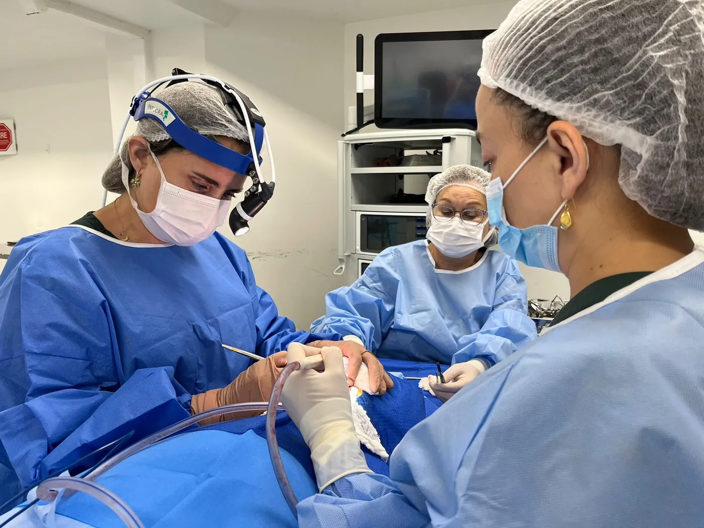
Clínicas donde realizamos cirugías
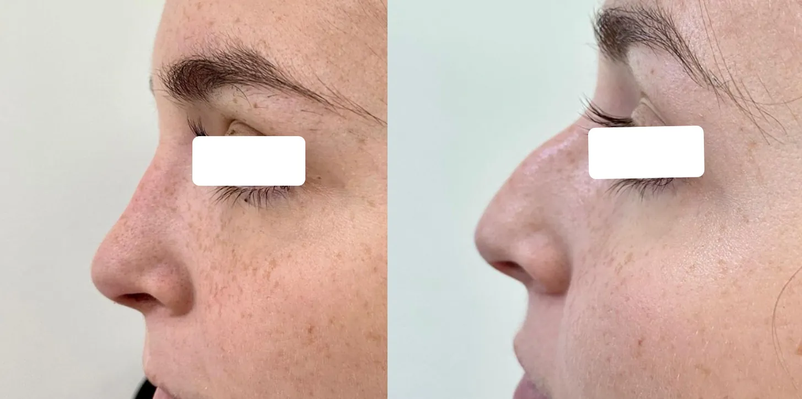
AntesDespués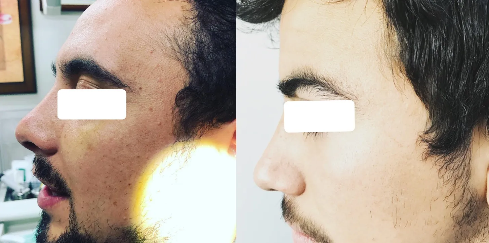
AntesDespuésResultados reales de pacientes de la consulta, publicados con autorización. Cada caso es distinto y se evalúa en consulta.
Especialistas
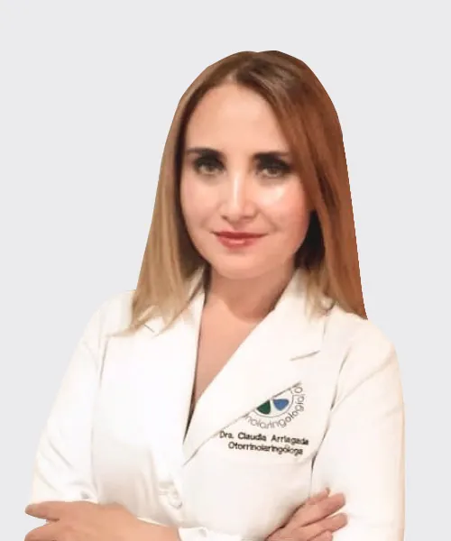
Otorrinolaringóloga
Oído, nariz y garganta en adultos y niños. Consultas, procedimientos y cirugía.
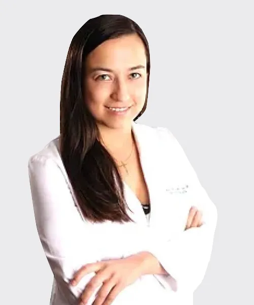
Otorrinolaringóloga
Oído, nariz y garganta en adultos y niños. Consultas, procedimientos y cirugía.
Comentarios de nuestros pacientes
Publicamos solo reseñas reales. Léelas directamente en el perfil de cada especialista.
Costo atenciones
Los pagos son reembolsables a través del recibo o la boleta en su Isapre o seguro.
Galería de fotos
Toca una foto para ampliarla
Preguntas frecuentes
La consulta para pacientes de Isapre o particulares cuesta $40.000. Para pacientes Fonasa se paga el bono, de valor $16.090, que se adquiere en la misma consulta con huella digital.
Sí. Pacientes Fonasa compran su bono en la consulta con huella digital. Pacientes de Isapre o seguro pueden reembolsar con la boleta o recibo.
Es un examen con un endoscopio flexible fino que entra por la nariz y permite ver la vía aérea y digestiva superior. Se hace con el paciente despierto y, si hace falta, anestesia en spray. Requiere ayuno mínimo de 30 minutos y la orden médica. Cuesta $85.000; con estudio de deglución, $100.000.
En Clínica Indisa Providencia, RedSalud Providencia y Clínica Juan Pablo II.
No. Limpieza de oídos, cauterizaciones nasales, taponamientos nasales y extracción de cuerpos extraños en la consulta no tienen costo adicional al pago de la consulta.
Sí. Evaluamos y tratamos tinnitus, vértigos, enfermedad de Menière, pérdida de audición y problemas de equilibrio, incluyendo procedimientos como punciones intratimpánicas con corticoides.
Sí. Atendemos apnea obstructiva del sueño en niños, enfermedad adenoamigdalina, otitis recurrentes, estridor y laringomalacia, y realizamos amigdalectomía, adenoidectomía y colleras.
Por WhatsApp o teléfono al +56 9 3917 0033, por correo a agenda.sanpatricio@gmail.com o en Doctoralia. Horario de lunes a viernes de 9 a 14 y de 15 a 19 horas; sábados, consultar.
Reserva de horas